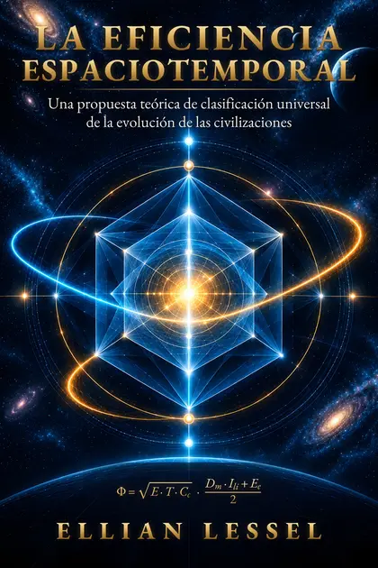
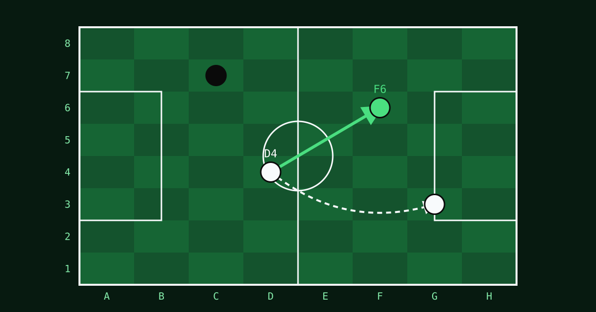

Ficção · Estratégia · Ciência
Ellian Lessel
Mitos que guardam memória. Tabuleiros que pensam em tempo real. Civilizações medidas por sua eficiência. Três universos, um mesmo rigor.
Ficção científica hard entrelaçada com a mitologia comparada, a estratégia do xadrez aplicada ao futebol e uma nova forma de classificar as civilizações do cosmos. Os três livros já estão disponíveis no Kindle.
Todos os livros foram escritos e publicados em espanhol.

Ad Primordia
Uma voz sepultada por seis mil anos sob a poeira da Mesopotâmia. Ficção científica hard e mitologia comparada.

El tablero de césped
Um tabuleiro de 64 casas sobre o campo. O xadrez transformado em sistema operacional do futebol.

La eficiencia espaciotemporal
Seis variáveis e uma Equação Mestra para medir o avanço de qualquer civilização.
Catálogo oficial
Três obras, três mundos
Escolha sua porta de entrada. Cada livro está disponível no Kindle, em espanhol; as edições impressas chegam nas próximas semanas.
Explorador interativo · La eficiencia espaciotemporal
A Equação Mestra
Para Kardashev, uma civilização avança quanto mais energia consome. Este ensaio propõe outra medida: com quanta eficiência ela a emprega. Toque em cada variável para descobrir o que ela mede e qual lei física lhe impõe um teto.
Índice de Eficiência Espaçotemporal (Φ). A raiz equilibra energia, tecnologia e cognição: se uma delas cai a zero, o índice colapsa. A fração premia a extensão que se mantém coesa e a eficiência entrópica.
6 variáveis fundamentais · compõem Φ
4 variáveis complementares · fora da equação
Os Graus de Eficiência Espaçotemporal
Seis Graus, do 0 ao 5, com critérios físicos aplicáveis a qualquer civilização do universo. Toque em um Grau.
A Teoria da Eficiência Espaçotemporal é uma proposta teórica aberta à verificação. O livro a formula com previsões falseáveis e declara que ela ainda não passou por revisão por pares.
O livro desenvolve cada variável, o Duplo e o Triplo Relógio, o Princípio da Invisibilidade Elegante e seis previsões falseáveis. Que variável falta à equação, ou qual delas sobra?
Comprar na AmazonLeitores
Resenhas
Só publicamos opiniões reais de leitores, com autorização e fonte. Os livros acabaram de sair: sua resenha pode estar entre as primeiras.
Horizonte editorial
A pentalogia Ad Primordia
Cinco volumes para uma só história: a dos que cruzaram as estrelas antes do nosso tempo e a dos que, seis mil anos depois, começam a escutá-los. Toque em cada volume.
Lista de leitores
Avise-me quando sair Creación
Receba um único e-mail quando o Volume II estiver disponível, além das novidades dos próximos livros. Sem spam; cancele quando quiser.
El tablero de césped · segundo volume
O epílogo já o anuncia: o impedimento como fronteira móvel, a falta tática como sacrifício consentido, a pressão das arquibancadas, o clima e a camada de dados em tempo real.
La eficiencia espaciotemporal · atualizações
Uma teoria que se oferece para ser desafiada: as próximas edições incorporarão novos dados, a revisão crítica dos leitores e a interação entre civilizações de Graus diferentes.
Traduções para o inglês e o português: no horizonte do autor.
Novidades
O mais recente do autor
Mitologias antigas, física, cosmos e estratégia: textos para continuar pensando além das páginas.

Três universos, um mesmo rigor
Um romance que lê os mitos como memória, um tabuleiro que pensa o futebol em tempo real e uma equação para medir civilizações. O que une três livros que parecem não ter nada em comum.
15 de novembro de 2026 · 3 min de leitura
E se os mitos fossem memória?
Dilúvios, deuses que descem do céu e sábios que advertem a humanidade: as grandes tradições da antiga Mesopotâmia compartilham peças demais. Ad Primordia parte dessa suspeita.
15 de novembro de 2026 · 3 min de leitura
O futebol jogado em 64 casas
Todos dizemos que o futebol é como o xadrez. Poucos se perguntam o que aconteceria se fosse de verdade. El tablero de césped transforma essa frase em método.
15 de novembro de 2026 · 3 min de leitura

Sobre o autor
Ellian Lessel
Ellian Lessel é um autor radicado em Montevidéu cuja obra percorre três territórios que raramente dividem a mesma estante: a ficção científica épica, a análise estratégica do esporte e o ensaio científico sobre o futuro das civilizações. Une-os uma mesma pergunta: como pensam, decidem e perduram os sistemas complexos, seja um povo que abandona seu mundo, uma equipe em campo ou uma espécie que olha para as estrelas.
Seu olhar formou-se no estudo da estratégia. É bacharel em Ciências Militares e professor de História dos Conflitos Armados. Tem um MBA em Direção e Administração de Empresas e é mestre em Estratégia Nacional, com pós-graduações de especialização em Inteligência Estratégica e em Segurança e Defesa.
É docente do Mestrado em Estratégia Nacional e das pós-graduações de especialização do Centro de Altos Estudos Nacionais (CALEN) e do Instituto Militar de Estudos Superiores (IMES), no Uruguai. Ali ensina a ler o conflito, a decisão e o longo prazo, as mesmas chaves que sustentam sua escrita.
Essa formação atravessa cada um de seus livros. Na saga Ad Primordia, iniciada com Despertar, a mitologia comparada da Suméria, Babilônia, Assíria, Pérsia e da tradição judaico-cristã cruza-se com a ficção científica hard e o primeiro contato. Em El tablero de césped, traduz o vocabulário do xadrez (a cravada, o garfo, o zugzwang) em um sistema operacional para analisar o futebol em tempo real. Em La eficiencia espaciotemporal, propõe uma Equação Mestra para classificar civilizações, em diálogo com Kardashev, Sagan, Drake e Fermi.
Escreve com uma convicção que suas três obras compartilham: uma ideia vale na medida em que resiste ao exame. Por isso não oferece verdades fechadas, mas marcos para pensar, e convida o leitor a discuti-los, recalculá-los e desafiá-los.
- MBA
- Mestre em Estratégia Nacional
- Esp. em Inteligência Estratégica
- Esp. em Segurança e Defesa
- Prof. de História dos Conflitos Armados
- Bacharel em Ciências Militares
Nota de transparência. Na elaboração destes livros, foram usadas ferramentas de inteligência artificial como apoio à redação, à verificação, à revisão e à criação de capas e imagens. A concepção de cada obra, seu cânone e todas as decisões criativas são do autor, que revisou e aprovou cada página. Cada livro detalha esse processo em uma nota final. As traduções deste site e as ilustrações de Novidades também foram elaboradas com IA e revisadas.
Escreva ao autor
Leitores, imprensa, clubes de leitura e instituições. Você também pode escrever para [correo].